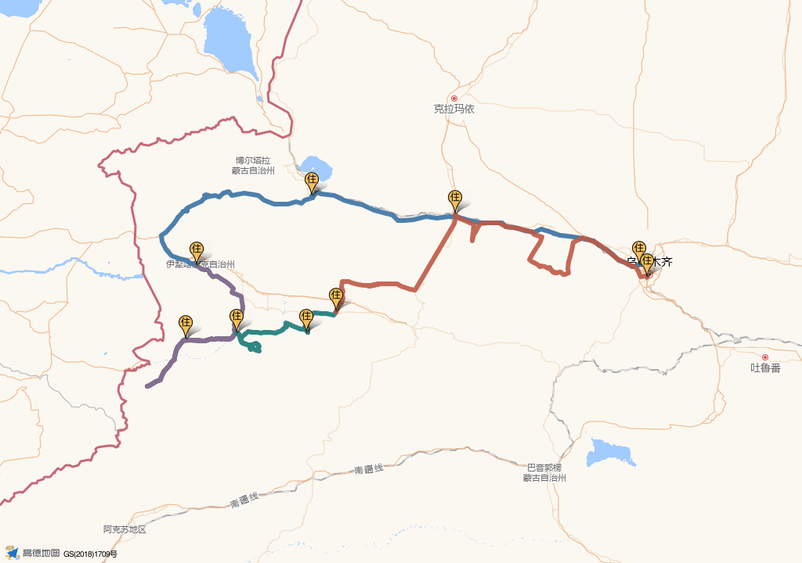

独库北段正常开放
7月13日从奎屯进入独库，经乔尔玛转唐布拉、孟克特，夜宿新源。
从 S101 百里丹霞进入独库北段，经孟克特、库尔德宁、喀拉峻、夏塔与赛里木湖，用九天完成一条有取舍、可执行的伊犁环线。
Plan A 为独库与伊昭正常开放时的主路线。Plan B、C 已预留独立入口，后续可直接填入封路绕行或天气调整方案。
7月13日从奎屯进入独库，经乔尔玛转唐布拉、孟克特，夜宿新源。
如家NEO酒店（乌鲁木齐黄河路中医院和田二街店）。
独库公路预约成功、伊昭公路开放、孟克特及夏塔正常接待。
节点按高德真实经纬度定位，节点间连线表示行程顺序，不代表道路实际弯曲轨迹。山路时间以当天导航和交通管制为准。

每张卡片对应一个旅行日。点击“查看分段”可快速跳到当天的公里数、驾驶时间和关键节点。
夜宵后补觉，午前参观自治区博物馆，傍晚逛大巴扎与和田二街。
取车进入S101，肯斯瓦特按时间选择，傍晚经安集海前往奎屯。
全天强度最高，早进独库，经乔尔玛深入孟克特，晚间到新源。
上午经巩留转场，下午游雪岭云杉、山谷草甸与河谷森林。
从库尔德宁前往喀拉峻，半日走东西喀拉峻草原线，晚上进八卦城。
早上从特克斯直接出发，午前进入夏塔，留足时间游览雪山古道，傍晚返回昭苏。
从昭苏翻越伊昭公路，下午逛喀赞其，傍晚在六星街吃饭。
早离伊宁，经果子沟进入赛湖，完成环湖后18点前驶向精河。
最晚07:00出发，中午还车，14:30前前往机场。
公里数为规划估算。住宿和景区入口确定后，应在出发前一晚用实际地址重新导航。
安集海仅在官方开放、现场允许时进入；若17:30仍未抵达附近，直接去奎屯。
最晚17:00左右离开孟克特。更晚则应考虑尼勒克方向就近住宿，避免疲劳夜驾。
半天只走一条主线，不同时安排阔克苏大峡谷全线。
建议提前购票，午前入园；继续向冰川方向徒步时，必须按景区末班车时间提前折返。
当晚住精河，不等日落。建议最晚18:00驶离赛里木湖。
目标13:30前完成还车，14:30前前往机场，不安排购物和市区景点。
勾选结果会自动保存在当前浏览器中，刷新或下次打开仍可继续盘点。
这几项决定路线能否顺利执行，建议在出发前7天、3天和前一晚分别检查。